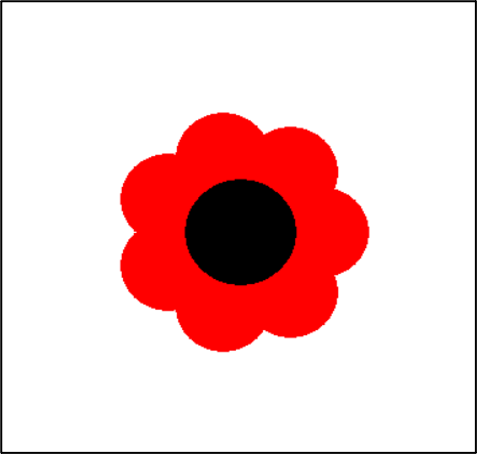

9. Advanced knowlegde about turtle.
You will have to complete 1 task in this chapter.
This chapter will give you more functions about turtle and their usages. There will be a small task along with this chapter.
This video contains some advance funtions of turtle
These are the functions, structures and their usages that you have been provided.
| Purpose | Command |
|---|---|
| Import Python turtle graphic. | import turtle |
| Create a name for your turtle. | name = turtle.Turtle() |
| Choosing a shape.
if you skip the command choosing a shape for your turtle then your turtle shape will automatically be an arrow. |
name.shape(‘shape’)
You have to replace ‘shape’ by one of these shapes: arrow, circle, square, triangle or turtle. |
| Choosing a color
if you skip the command choosing a color for your turtle then your turtle color will automatically be black. |
name.color(‘color’)
You have to replace ‘color’ by the color that you wish to. |
| Setting a default location to (0,0) | name.goto(0,0) |
| Setting a
background
If you don’t want to have background image for your turtle, please skip this part. |
|
| Call the screen function. | screen=turtle.Screen(). |
| Set background to the picture that you like. | screen.bgpic(“picture_file”)
Click to the image icon and look at 3 images that it contains. Replace ‘picture_file’ with the image file that you like. |
| Movement commands | |
| Make the turtle goes forward in the current direction. | turtle.forward(steps) |
| Turns the turtle to the left direction in number degrees. | turtle.left(degrees) |
| Turns the turtle to the right direction in number degrees. | turtle.right(degrees) |
| Pointing a variable to an object. | variable = object
The object can be in any type: integer, decimal, list, etc. |
| Setting turtle pen to a color | turtle. pencolor('color')
Replace ‘color’ by a color that you want. |
| Make the turtle goes backward in the current direction | turtle.backward(steps)
Replace “steps” by an integer. |
| Draw a semi circle | turtle.circle(radius, 180)
Replace radius by either a decimal or an integer. 180 is fixed for SEMI-CIRCLE only. |
| Draw a circle | turtle.circle(radius)
Replace radius by either a decimal or an integer. |
| The general while loop is: n = a while n < c: code chunk n = n + b |
The general for loop is: for i inrange(i): code chunk |
Below are some useful and common functions of turtle graphics
| Draw a circular dot with diameter size, using color | turtle.dot(size=None, *color) Replace size by either an integer or a float. No need to set up a color if you don’t want to. |
||||||||||
| Set the turtle’s speed to an integer value in the range 0 to 10 |
Turtle.speed(speed = None)
|
||||||||||
| Set the orientation of the turtle to to_angle |
turtle.setheading(to_angle)
Replace “to_ange” to one of the integer in the table above based on your need |
||||||||||
| Set the line thickness to width | turtle.pensize(width=None) width – a positive number |
||||||||||
| Fill color inside a shape | turtle.fillcolor(*args) Replace “*args” by the color that you want. For instance, if you want to fill in a circle with “red”, and your turtle name is “bob”, the correct command is bob.fillcolor(“red”). |
||||||||||
| Hide your turtle away | turtle.hideturtle() You will just have to type the exact command like above to hide your turtle |
||||||||||
| Make your turtle appears again | Turtle.showturtle() You will just have to type the exact command like above to make your turtle appears |
||||||||||
| set pencolor and fillcolor | turtle.color(*args) Replace your “*args” with a color. |
Task: Draw a flower like the image below
Instruction
-
Step 1:
- Set up your turtle name and color
- Set up the turtle speed based on the command that has been provided in the table above.
-
Step 2:
- Set up the pencolor and fillcolor based on the provided command in the table above. This color will be the color of your flower’s petals.
- The flower in the picture above has red petals.
-
Step 3: Write a for loop to draw the petals
-
“i” in the for loop is the number of petals that you want your flower to have.
Recommend that i should be around 5 to 8 -
There 4 lines of code in the code chunk:
- Move your turtle forward by 500/(number of petals)
- Draw a circular dot with size of 500/(number of petals)
- Move your turtle backward by 500/(number of petals)
- Turn your turtle to the right for 360/(number of petals)
-
“i” in the for loop is the number of petals that you want your flower to have.
-
Step 4: draw the center of the circle
- Set up the pencolor and fillcolor based on the provided command in the table above. This color will be the color of your flower’s center.
- Draw a circular dot with size of 500/(number of petals-1)
- Set up the pencolor and fillcolor based on the provided command in the table above. This color will be the color of your flower’s center.
NOW PLEASE COMPLETE THE TASK !
# This solution will draw out a flower that look exactly like the provided image.
petals = 6
my_turtle = turtle.Turtle()
my_turtle.shape("turtle")
my_turtle.speed(1)
my_turtle.penup()
my_turtle.color("red")
for i in range(petals):
my_turtle.forward(500/(petals))
my_turtle.dot(500/(petals))
my_turtle.backward(500/(petals))
my_turtle.right(360/petals)
my_turtle.color("black")
my_turtle.dot(500/(petals-1))
petals = 6
my_turtle = turtle.Turtle()
my_turtle.shape("turtle")
my_turtle.speed(1)
my_turtle.penup()
my_turtle.color("red")
for i in range(petals):
my_turtle.forward(500/(petals))
my_turtle.dot(500/(petals))
my_turtle.backward(500/(petals))
my_turtle.right(360/petals)
my_turtle.color("black")
my_turtle.dot(500/(petals-1))
from browser import document
import turtle
turtle.set_defaults(
turtle_canvas_wrapper = document['turtle-div1'])
# DO NOT DELETE ABOVE THIS LINE
######## Write your code below
name = turtle.Turtle()
name.shape("turtle")
name.color("red")
# DO NOT DELETE BELOW THIS LINE
turtle.done()
« Previous